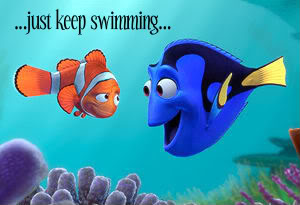

Just Keep Swimming
I had a conversation a few days ago with a young colleague who said (basically), "Nothing I do ever seems to take off the way your projects do." Coincidentally, Dan Luu's What's Worked in Computer Science landed on my screen just a couple of hours later. In it, he goes through a list that Butler Lampson made in 1999 and points out that, "…every Yes from 1999 still Yes today, seven of the Maybes and Nos were upgraded, and only one was downgraded."
It's inspiring to see that good ideas do win in the end, but still a bit disheartening to realize how long it can take. What's most important, though, is to realize that most ideas never made it onto Lampson's original list. The things he discussed in 1999 had survived many visits from Charles Darwin before becoming big enough to be worth talking about. Most ideas, even those from the same people, never made it that far.
So yes, Software Carpentry is doing well, but it took 14 years of on-and-off work to reach take-off, and nearly another four to get to where we are now. The Architecture of Open Source Applications series is about to release its fourth volume, and the University of Toronto's MSc in Applied Computing and UCOSP are apparently doing well, though I can't really take credit for either beyond helping to get the ball rolling. (In particular, Michelle Craig, Karen Reid, Eleni Stroulia, and Reid Holmes have helped more than 600 students from 30 different universities over the past seven years through UCOSP.) However:
- Software Carpentry was originally a competition to design new software tools, not a training course. The fact that you didn't know that tells you how well it worked.
- I made three attempts to build an extensible programming system. You didn't know that either…
- Students worked on a fork of Trac called DrProject for five years. I think one copy is still up and running somewhere.
- Three summers of work on Browsercast still hasn't produced a usable tool.
- My attempt to create a briefing on education for programmers and entrepreneurs using the same crowdsourcing and arm-twisting that worked for AOSA never got off the ground.
- DemoCamp morphed into MarketingPitchCamp and then ran out of steam.
- I didn't get a Shuttleworth Foundation fellowship.
- I bet you haven't read And Then… or Still, and I haven't even finished Madica or Beneath Coriandel.
- I'm really proud that the teaching summit in Boulder happened, but I have no idea whether there will be a second one or not.
…and those are just the ones I can remember on a rainy Sunday afternoon.
When I do in-person instructor training for Software Carpentry, I have trainees film each other teaching short lessons. The main goal isn't to give people feedback on their presentation skills: they could get that without being recorded. The real aim is to teach them how to scale their evaluations of themselves. Almost without exception, people will give themselves an F when others would give them a B; knowing that, they can adjust their self-assessment to be more accurate. And knowing that, they can start to improve.
Equally, when you look at someone's successes, you need to remember that you're not seeing all the projects they started that didn't come to fruition, or the years it took them to "suddenly" succeed. The secret isn't luck or genius; it's to keep trying, and to talk to people as honestly and as openly as you can about what you're doing, how it's going, and what your next step should be.
